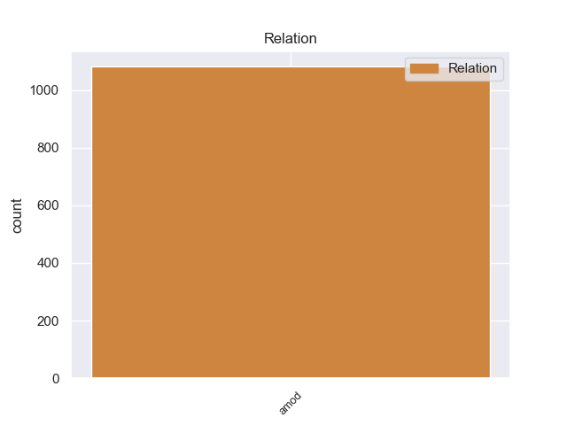
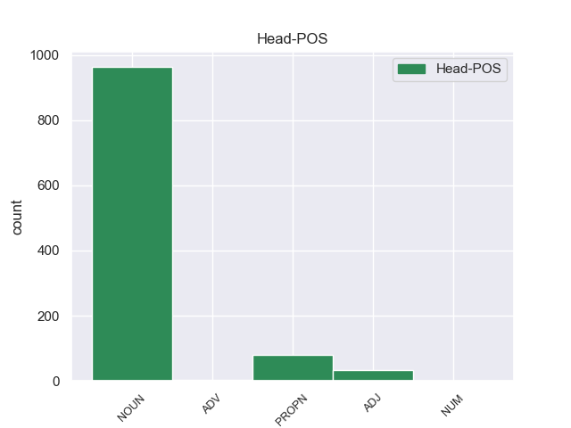
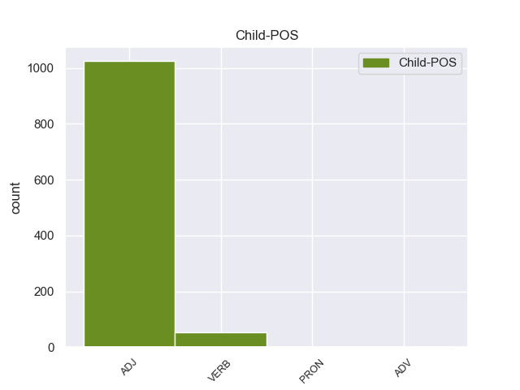

Distribution of features within this leaf



Agreement Rules sorted by frequency.
- When the dependent token is the adjectival modifier(amod) of the head token, and the head token is NOUN and the dependent token is ADJ.
1 हमें _ _ _ _ 0 _ _ _
2 लोगों _ _ _ _ 0 _ _ _
3 तक _ _ _ _ 0 _ _ _
4 गांधीवादी गांधीवादी ADJ JJ Case=Nom 5 amod _ ChunkId=NP3|ChunkType=child|Translit=gāṁdhīvādī
5 संदेश संदेश NOUN NN Case=Nom|Gender=Masc|Number=Sing|Person=3 0 _ _ _
6 पहुंचाने _ _ _ _ 0 _ _ _
7 का _ _ _ _ 0 _ _ _
8 मौका _ _ _ _ 0 _ _ _
9 मिला _ _ _ _ 0 _ _ _
10 । _ _ _ _ 0 _ _ _
1 पत्रिका _ _ _ _ 0 _ _ _
2 के _ _ _ _ 0 _ _ _
3 अनुसार _ _ _ _ 0 _ _ _
4 खान _ _ _ _ 0 _ _ _
5 की _ _ _ _ 0 _ _ _
6 इन _ _ _ _ 0 _ _ _
7 यात्राओं _ _ _ _ 0 _ _ _
8 का _ _ _ _ 0 _ _ _
9 उद्देश्य _ _ _ _ 0 _ _ _
10 अभी _ _ _ _ 0 _ _ _
11 तक _ _ _ _ 0 _ _ _
12 स्पष्ट _ _ _ _ 0 _ _ _
13 नहीं _ _ _ _ 0 _ _ _
14 है _ _ _ _ 0 _ _ _
15 , _ _ _ _ 0 _ _ _
16 लेकिन _ _ _ _ 0 _ _ _
17 खुफिया _ _ _ _ 0 _ _ _
18 अधिकारियों _ _ _ _ 0 _ _ _
19 का _ _ _ _ 0 _ _ _
20 मानना _ _ _ _ 0 _ _ _
21 है _ _ _ _ 0 _ _ _
22 कि _ _ _ _ 0 _ _ _
23 सऊदी _ _ _ _ 0 _ _ _
24 अरब _ _ _ _ 0 _ _ _
25 और _ _ _ _ 0 _ _ _
26 मिस्र _ _ _ _ 0 _ _ _
27 परमाणु _ _ _ _ 0 _ _ _
28 तक़नीक _ _ _ _ 0 _ _ _
29 की _ _ _ _ 0 _ _ _
30 तलाश _ _ _ _ 0 _ _ _
31 में _ _ _ _ 0 _ _ _
32 हैं _ _ _ _ 0 _ _ _
33 और _ _ _ _ 0 _ _ _
34 कई _ _ _ _ 0 _ _ _
35 अफ्रीकी _ _ _ _ 0 _ _ _
36 देश _ _ _ _ 0 _ _ _
37 कच्चे कच्चा ADJ JJ Case=Nom|Gender=Masc|Number=Sing 38 amod _ ChunkId=NP12|ChunkType=child|Translit=kacce
38 यूरेनियम यूरेनियम PROPN NNP Case=Nom|Gender=Masc|Number=Sing|Person=3 0 _ _ _
39 संपन्न _ _ _ _ 0 _ _ _
40 हैं _ _ _ _ 0 _ _ _
41 । _ _ _ _ 0 _ _ _
1 वे _ _ _ _ 0 _ _ _
2 दोनों _ _ _ _ 0 _ _ _
3 मजदूर _ _ _ _ 0 _ _ _
4 एक _ _ _ _ 0 _ _ _
5 रेलवे _ _ _ _ 0 _ _ _
6 परियोजना _ _ _ _ 0 _ _ _
7 में _ _ _ _ 0 _ _ _
8 मिट्टी _ _ _ _ 0 _ _ _
9 खोदने खोद VERB VM Case=Acc|Number=Plur|VerbForm=Inf 11 amod _ ChunkId=VGNN|ChunkType=head|Tam=nA|Translit=khodane|Vib=ना_वाला
10 वाली _ _ _ _ 0 _ _ _
11 मशीनों मशीन NOUN NN Case=Acc|Gender=Fem|Number=Plur|Person=3 0 _ _ _
12 के _ _ _ _ 0 _ _ _
13 संचालन _ _ _ _ 0 _ _ _
14 से _ _ _ _ 0 _ _ _
15 जुड़े _ _ _ _ 0 _ _ _
16 हुए _ _ _ _ 0 _ _ _
17 थे _ _ _ _ 0 _ _ _
18 । _ _ _ _ 0 _ _ _
1 पुलिस _ _ _ _ 0 _ _ _
2 का _ _ _ _ 0 _ _ _
3 मानना _ _ _ _ 0 _ _ _
4 है _ _ _ _ 0 _ _ _
5 कि _ _ _ _ 0 _ _ _
6 इसके _ _ _ _ 0 _ _ _
7 पीछे _ _ _ _ 0 _ _ _
8 एक _ _ _ _ 0 _ _ _
9 स्थानीय स्थानीय ADJ JJ Case=Acc 0 _ _ _
10 आपराधिक आपराधिक ADJ JJ Case=Acc 9 amod _ ChunkId=NP3|ChunkType=child|Translit=āparādhika
11 गिरोह _ _ _ _ 0 _ _ _
12 की _ _ _ _ 0 _ _ _
13 भूमिका _ _ _ _ 0 _ _ _
14 है _ _ _ _ 0 _ _ _
15 । _ _ _ _ 0 _ _ _
1 लंदन _ _ _ _ 0 _ _ _
2 में _ _ _ _ 0 _ _ _
3 आत्मघाती _ _ _ _ 0 _ _ _
4 हमले _ _ _ _ 0 _ _ _
5 की _ _ _ _ 0 _ _ _
6 साजिश _ _ _ _ 0 _ _ _
7 रचने रच VERB VM Case=Acc|Number=Sing|VerbForm=Inf 16 amod _ ChunkId=VGNN|ChunkType=head|Tam=nA|Translit=racane|Vib=ना_वाला
8 वाले _ _ _ _ 0 _ _ _
9 कुख्यात _ _ _ _ 0 _ _ _
10 अल _ _ _ _ 0 _ _ _
11 - _ _ _ _ 0 _ _ _
12 कायदा _ _ _ _ 0 _ _ _
13 आतंकी _ _ _ _ 0 _ _ _
14 हारून _ _ _ _ 0 _ _ _
15 राशिद _ _ _ _ 0 _ _ _
16 असवत असवत PROPN NNP Case=Acc|Gender=Masc|Number=Sing|Person=3 0 _ _ _
17 की _ _ _ _ 0 _ _ _
18 अमेरिकी _ _ _ _ 0 _ _ _
19 खुफिया _ _ _ _ 0 _ _ _
20 एजेंसी _ _ _ _ 0 _ _ _
21 एफबीआई _ _ _ _ 0 _ _ _
22 को _ _ _ _ 0 _ _ _
23 भी _ _ _ _ 0 _ _ _
24 सरगर्मी _ _ _ _ 0 _ _ _
25 से _ _ _ _ 0 _ _ _
26 तलाश _ _ _ _ 0 _ _ _
27 है _ _ _ _ 0 _ _ _
28 । _ _ _ _ 0 _ _ _
1 सरकारी _ _ _ _ 0 _ _ _
2 मुलाजिमों _ _ _ _ 0 _ _ _
3 से _ _ _ _ 0 _ _ _
4 बेगारी _ _ _ _ 0 _ _ _
5 लेने _ _ _ _ 0 _ _ _
6 में _ _ _ _ 0 _ _ _
7 लोक _ _ _ _ 0 _ _ _
8 निर्माण _ _ _ _ 0 _ _ _
9 विभाग _ _ _ _ 0 _ _ _
10 व _ _ _ _ 0 _ _ _
11 आईपीएच _ _ _ _ 0 _ _ _
12 सबसे सबसे ADJ JJ Case=Nom 13 amod _ ChunkId=NP5|ChunkType=child|Translit=sabase
13 ऊपर ऊपर ADV NST AdpType=Post|Case=Nom|Gender=Masc|Number=Sing|Person=3 0 _ _ _
14 हैं _ _ _ _ 0 _ _ _
15 । _ _ _ _ 0 _ _ _
1 जानकारी _ _ _ _ 0 _ _ _
2 के _ _ _ _ 0 _ _ _
3 मुताबिक _ _ _ _ 0 _ _ _
4 आयोग _ _ _ _ 0 _ _ _
5 में _ _ _ _ 0 _ _ _
6 देश _ _ _ _ 0 _ _ _
7 के _ _ _ _ 0 _ _ _
8 तमाम _ _ _ _ 0 _ _ _
9 राज्यों _ _ _ _ 0 _ _ _
10 से _ _ _ _ 0 _ _ _
11 महिलाओं _ _ _ _ 0 _ _ _
12 के _ _ _ _ 0 _ _ _
13 प्रति _ _ _ _ 0 _ _ _
14 होने _ _ _ _ 0 _ _ _
15 वाले _ _ _ _ 0 _ _ _
16 अपराध _ _ _ _ 0 _ _ _
17 या _ _ _ _ 0 _ _ _
18 अन्य _ _ _ _ 0 _ _ _
19 मामले _ _ _ _ 0 _ _ _
20 दर्ज _ _ _ _ 0 _ _ _
21 होते _ _ _ _ 0 _ _ _
22 हैं _ _ _ _ 0 _ _ _
23 , _ _ _ _ 0 _ _ _
24 लेकिन _ _ _ _ 0 _ _ _
25 उत्तर _ _ _ _ 0 _ _ _
26 - _ _ _ _ 0 _ _ _
27 पूर्वी _ _ _ _ 0 _ _ _
28 राज्यों _ _ _ _ 0 _ _ _
29 में _ _ _ _ 0 _ _ _
30 से _ _ _ _ 0 _ _ _
31 असम _ _ _ _ 0 _ _ _
32 को _ _ _ _ 0 _ _ _
33 छोड़कर _ _ _ _ 0 _ _ _
34 अन्य _ _ _ _ 0 _ _ _
35 किसी कोई PRON PRP Case=Acc|Number=Sing|Person=3|PronType=Prs 37 amod _ ChunkId=NP10|ChunkType=child|Tam=0|Translit=kisī|Vib=0
36 भी _ _ _ _ 0 _ _ _
37 राज्य राज्य NOUN NN Case=Acc|Gender=Masc|Number=Sing|Person=3 0 _ _ _
38 से _ _ _ _ 0 _ _ _
39 मामले _ _ _ _ 0 _ _ _
40 न _ _ _ _ 0 _ _ _
41 के _ _ _ _ 0 _ _ _
42 बराबर _ _ _ _ 0 _ _ _
43 आते _ _ _ _ 0 _ _ _
44 हैं _ _ _ _ 0 _ _ _
45 । _ _ _ _ 0 _ _ _
1 उन्हें _ _ _ _ 0 _ _ _
2 अंतिम अंतिम ADJ JJ Case=Acc|Gender=Masc|Number=Sing 3 amod _ ChunkId=NP2|ChunkType=child|Translit=aṁtima
3 चार चार NUM QC Case=Acc|NumType=Card 0 _ _ _
4 के _ _ _ _ 0 _ _ _
5 मुकाबले _ _ _ _ 0 _ _ _
6 में _ _ _ _ 0 _ _ _
7 जर्मनी _ _ _ _ 0 _ _ _
8 की _ _ _ _ 0 _ _ _
9 अना _ _ _ _ 0 _ _ _
10 - _ _ _ _ 0 _ _ _
11 लिना _ _ _ _ 0 _ _ _
12 ग्रोनेफेल्ड _ _ _ _ 0 _ _ _
13 से _ _ _ _ 0 _ _ _
14 भिड़ना _ _ _ _ 0 _ _ _
15 था _ _ _ _ 0 _ _ _
16 लेकिन _ _ _ _ 0 _ _ _
17 खिताब _ _ _ _ 0 _ _ _
18 की _ _ _ _ 0 _ _ _
19 प्रबल _ _ _ _ 0 _ _ _
20 दावेदार _ _ _ _ 0 _ _ _
21 दूसरी _ _ _ _ 0 _ _ _
22 सीड _ _ _ _ 0 _ _ _
23 लिना _ _ _ _ 0 _ _ _
24 चोटिल _ _ _ _ 0 _ _ _
25 होने _ _ _ _ 0 _ _ _
26 के _ _ _ _ 0 _ _ _
27 कारण _ _ _ _ 0 _ _ _
28 कोर्ट _ _ _ _ 0 _ _ _
29 पर _ _ _ _ 0 _ _ _
30 नहीं _ _ _ _ 0 _ _ _
31 उतर _ _ _ _ 0 _ _ _
32 सकीं _ _ _ _ 0 _ _ _
33 । _ _ _ _ 0 _ _ _
Disagree Examples:
1 यहाँ _ _ _ _ 0 _ _ _
2 के _ _ _ _ 0 _ _ _
3 मैजिकल _ _ _ _ 0 _ _ _
4 कासल _ _ _ _ 0 _ _ _
5 में _ _ _ _ 0 _ _ _
6 ' _ _ _ _ 0 _ _ _
7 विश _ _ _ _ 0 _ _ _
8 कम _ _ _ _ 0 _ _ _
9 ट्रू _ _ _ _ 0 _ _ _
10 ' _ _ _ _ 0 _ _ _
11 नामक नामक ADJ JJ Case=Acc 16 amod _ ChunkId=JJP|ChunkType=head|Translit=nāmaka
12 12 _ _ _ _ 0 _ _ _
13 मिनट _ _ _ _ 0 _ _ _
14 की _ _ _ _ 0 _ _ _
15 खूबसूरत _ _ _ _ 0 _ _ _
16 फिल्म फिल्म NOUN NN Case=Nom|Gender=Fem|Number=Sing|Person=3 0 _ _ _
17 दिखाई _ _ _ _ 0 _ _ _
18 जाती _ _ _ _ 0 _ _ _
19 है _ _ _ _ 0 _ _ _
20 । _ _ _ _ 0 _ _ _
1 लालू _ _ _ _ 0 _ _ _
2 की _ _ _ _ 0 _ _ _
3 पत्नी _ _ _ _ 0 _ _ _
4 पूर्व पूर्व ADJ JJ Case=Acc 5 amod _ ChunkId=NP3|ChunkType=child|Translit=pūrva
5 मुख्यमंत्री मुख्यमंत्री PROPN NNP Case=Nom|Gender=Fem|Number=Sing|Person=3 0 _ _ _
6 राबड़ी _ _ _ _ 0 _ _ _
7 देवी _ _ _ _ 0 _ _ _
8 के _ _ _ _ 0 _ _ _
9 सबसे _ _ _ _ 0 _ _ _
10 छोटे _ _ _ _ 0 _ _ _
11 भाई _ _ _ _ 0 _ _ _
12 सुभाष _ _ _ _ 0 _ _ _
13 ने _ _ _ _ 0 _ _ _
14 राजद _ _ _ _ 0 _ _ _
15 के _ _ _ _ 0 _ _ _
16 वरिष्ठ _ _ _ _ 0 _ _ _
17 नेता _ _ _ _ 0 _ _ _
18 और _ _ _ _ 0 _ _ _
19 पूर्व _ _ _ _ 0 _ _ _
20 मंत्री _ _ _ _ 0 _ _ _
21 जगदानंद _ _ _ _ 0 _ _ _
22 सिंह _ _ _ _ 0 _ _ _
23 पर _ _ _ _ 0 _ _ _
24 आरोप _ _ _ _ 0 _ _ _
25 लगाया _ _ _ _ 0 _ _ _
26 कि _ _ _ _ 0 _ _ _
27 वह _ _ _ _ 0 _ _ _
28 पार्टी _ _ _ _ 0 _ _ _
29 हितों _ _ _ _ 0 _ _ _
30 के _ _ _ _ 0 _ _ _
31 खिलाफ _ _ _ _ 0 _ _ _
32 काम _ _ _ _ 0 _ _ _
33 कर _ _ _ _ 0 _ _ _
34 रहे _ _ _ _ 0 _ _ _
35 हैं _ _ _ _ 0 _ _ _
36 । _ _ _ _ 0 _ _ _
1 दूसरे दूसरा ADJ QO Case=Acc|Gender=Masc|Number=Sing|NumType=Ord 2 amod _ ChunkId=NP|ChunkType=child|Translit=dūsare
2 सियाचिन सियाचिन PROPN NNP Case=Nom|Gender=Masc|Number=Sing|Person=3 0 _ _ _
3 या _ _ _ _ 0 _ _ _
4 कश्मीर _ _ _ _ 0 _ _ _
5 मुद्दे _ _ _ _ 0 _ _ _
6 का _ _ _ _ 0 _ _ _
7 कोई _ _ _ _ 0 _ _ _
8 भी _ _ _ _ 0 _ _ _
9 समाधान _ _ _ _ 0 _ _ _
10 तभी _ _ _ _ 0 _ _ _
11 संभव _ _ _ _ 0 _ _ _
12 है _ _ _ _ 0 _ _ _
13 जब _ _ _ _ 0 _ _ _
14 सीमा _ _ _ _ 0 _ _ _
15 पार _ _ _ _ 0 _ _ _
16 का _ _ _ _ 0 _ _ _
17 आतंकवाद _ _ _ _ 0 _ _ _
18 पूरी _ _ _ _ 0 _ _ _
19 तरह _ _ _ _ 0 _ _ _
20 से _ _ _ _ 0 _ _ _
21 बंद _ _ _ _ 0 _ _ _
22 हो _ _ _ _ 0 _ _ _
23 जाएगा _ _ _ _ 0 _ _ _
24 । _ _ _ _ 0 _ _ _
1 कुछ _ _ _ _ 0 _ _ _
2 दिन _ _ _ _ 0 _ _ _
3 पहले _ _ _ _ 0 _ _ _
4 कुवैत _ _ _ _ 0 _ _ _
5 ने _ _ _ _ 0 _ _ _
6 अपनी _ _ _ _ 0 _ _ _
7 पहली _ _ _ _ 0 _ _ _
8 प्राइवेट प्राइवेट ADJ JJ Case=Nom 10 amod _ ChunkId=NP4|ChunkType=child|Translit=prāiveṭa
9 बजट _ _ _ _ 0 _ _ _
10 एयरलाइंस एयरलाइन NOUN NN Case=Acc|Gender=Fem|Number=Plur|Person=3 0 _ _ _
11 जजीरा _ _ _ _ 0 _ _ _
12 एयरवेज _ _ _ _ 0 _ _ _
13 की _ _ _ _ 0 _ _ _
14 उड़ानों _ _ _ _ 0 _ _ _
15 की _ _ _ _ 0 _ _ _
16 संख्या _ _ _ _ 0 _ _ _
17 बढ़ाने _ _ _ _ 0 _ _ _
18 की _ _ _ _ 0 _ _ _
19 मांग _ _ _ _ 0 _ _ _
20 की _ _ _ _ 0 _ _ _
21 । _ _ _ _ 0 _ _ _
1 इस _ _ _ _ 0 _ _ _
2 अभियान _ _ _ _ 0 _ _ _
3 में _ _ _ _ 0 _ _ _
4 जाने जा VERB VM Case=Acc|Number=Plur|VerbForm=Inf 7 amod _ ChunkId=VGNN|ChunkType=head|Tam=nA|Translit=jāne|Vib=ना_वाला
5 वाले _ _ _ _ 0 _ _ _
6 अंतरिक्ष _ _ _ _ 0 _ _ _
7 यात्री यात्री NOUN NN Case=Nom|Gender=Masc|Number=Plur|Person=3 0 _ _ _
8 हैं _ _ _ _ 0 _ _ _
9 , _ _ _ _ 0 _ _ _
10 पायलट _ _ _ _ 0 _ _ _
11 जेम्स _ _ _ _ 0 _ _ _
12 कैली _ _ _ _ 0 _ _ _
13 , _ _ _ _ 0 _ _ _
14 वेंडी _ _ _ _ 0 _ _ _
15 लॅरेंस _ _ _ _ 0 _ _ _
16 , _ _ _ _ 0 _ _ _
17 चार्ल्स _ _ _ _ 0 _ _ _
18 कमारडा _ _ _ _ 0 _ _ _
19 , _ _ _ _ 0 _ _ _
20 एंड्रयू _ _ _ _ 0 _ _ _
21 थॉमस _ _ _ _ 0 _ _ _
22 , _ _ _ _ 0 _ _ _
23 स्टीफ़न _ _ _ _ 0 _ _ _
24 रॅबिंसन _ _ _ _ 0 _ _ _
25 , _ _ _ _ 0 _ _ _
26 कमांडर _ _ _ _ 0 _ _ _
27 इलीन _ _ _ _ 0 _ _ _
28 कॉलिंस _ _ _ _ 0 _ _ _
29 और _ _ _ _ 0 _ _ _
30 जापान _ _ _ _ 0 _ _ _
31 के _ _ _ _ 0 _ _ _
32 सोची _ _ _ _ 0 _ _ _
33 नोगुची _ _ _ _ 0 _ _ _
34 । _ _ _ _ 0 _ _ _